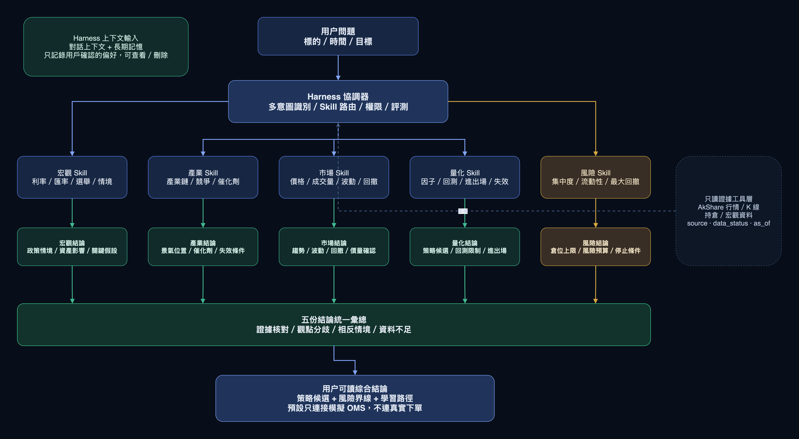
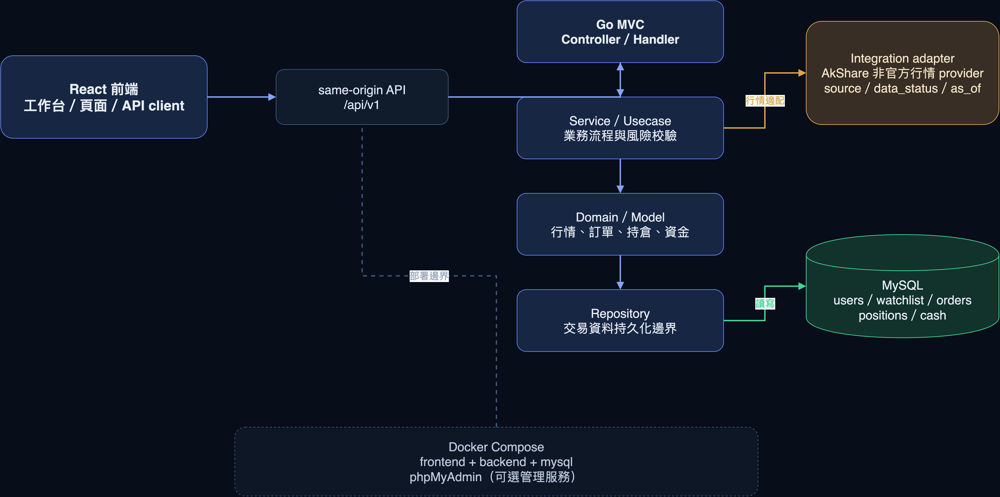

項目框架
前端與交互
React 頁面與組件組成工作台框架；市場頁採用“左側證券目錄 / 中央報價與 K 線 / 右側訂單操作區”的信息佈局。用户的主要貢獻是原型圖和前端設計，由原型明確流程、層級和視覺驗收。
後端與數據
Go 代碼按 MVC 分層，數據庫訪問通過 repository 組織。當前實現邊界為行情 provider 接入和賬號認證；各業務頁面的完整服務邏輯仍需後續逐項交付。
部署與邊界
項目骨架採用 Docker Compose 組織 frontend、backend、mysql；phpMyAdmin 為可選管理工具。MVP 選用 AkShare 作為 HKEX 官方行情 feed 的替代來源；這是非官方公開數據，不代表 HKEX feed，也不等同於券商執行接口。
實施方法
先寫 Spec 和共享 API 合同，再按 TDD 執行 RED → GREEN → 集成/E2E → 獨立審查；多 Agent 按模塊邊界協作，由集成者核對接口、迴歸和視覺證據。
實現範圍
| 狀態 | 範圍 | 説明 |
|---|---|---|
| 已實現 | 行情接入 | 後端行情適配器接入 AkShare 外部數據採集鏈路；當前屬於非官方數據，來源、更新時間和過期狀態必須按實顯示。 |
| 已實現 | 賬號登錄與密碼加密 | Go 認證服務使用 bcrypt 對密碼進行哈希校驗；數據庫保存哈希，不保存明文密碼。 |
| 已實現 | 代碼框架 | React 前端、Go MVC 分層、repository/integration 邊界及 Docker Compose 工程骨架。 |
| 原型圖 | 其餘工作台業務頁面 | 收藏、持倉、訂單、融資、資金、出入金、貨幣兑換和多 Agent 頁面表達位置、用途與目標交互；不代表業務服務已完整實現。 |
工作台頁面
以下每一張截圖對應一個獨立導航頁，按頁面順序逐張展示。除了行情接入、賬號登錄密碼加密和代碼框架，其他業務視圖均為產品原型圖。


日 K 與行情來源
- 圖表使用 TradingView Lightweight Charts 呈現 API 回傳的 OHLCV；圖表庫本身不採集行情，也不提供港股歷史數據。
- AkShare 透過獨立採集服務接入，Compose 預設啟用 AkShare 歷史行情 provider；上游不可用時可依適配器規則回退，來源標籤不會冒充 AkShare。
- 為控制電腦與資料庫負載，採集名單最多三檔：00700 騰訊、09988 阿里巴巴、01810 小米；預設歷史窗口為最近六個日曆月。
- 近半年窗口同時適用日線與已配置的分鐘週期；分鐘資料遠多於日線，對上游請求、資料庫容量及重複回補造成較大負載，後續可按實際資源縮減分鐘週期。
- 報價仍按 15 分鐘間隔輪詢；成功回補後，歷史 K 線預設每日更新一次，避免每輪報價都重抓半年資料。
- AkShare 屬非官方公開數據源，不代表 HKEX 官方實時行情；行情狀態、來源與時間戳必須按 API 實際回傳顯示。
行情來源選擇：以 AkShare 取代 HKEX 官方 Feed
- HKEX 官方市場數據須按授權、使用方式及用戶範圍付費，沒有可任意使用的免費港股行情 API；MVP 因成本與原型驗證需要，不接 OMD-C／OMD-D，改採 AkShare 公開行情適配器。
- AkShare 是非官方數據來源，可能延遲、缺漏或中斷；畫面必須保留來源、時間戳和 stale/unofficial 狀態，不得標記為 HKEX 官方實時行情。
- HKEX 官方 feed 與歷史資料市場仍是日後商業化的候選方案，不是目前系統已接入的服務；正式使用須先確認授權、用途與費用。
- 行情來源替代不涵蓋交易執行。真實下單仍須另接獲授權的券商／交易參與者 API，並透過獨立 execution adapter。
多 Agent 策略助手：Harness 與產品定位
行業產品形態正從“單輪問答”走向由 Harness 驅動的 Agent 工作流：Harness 是模型外圍的工程系統，負責多意圖辨識、任務路由、短期對話上下文與經用戶確認的長期記憶、工具權限、角色 Skill、結構化輸出、風險護欄、評測和運行軌跡。本項目的量化助手提供多輪對話與記憶管理的交互原型；真實模型推理和多 Agent 服務尚未實現。
近一年，Codex、Claude Code 等可執行開發 Agent，以及 DeepSeek 的開放權重路線，讓市場討論從「模型回答得好不好」擴展到「模型能否在受控工作流中完成任務」。公開一手資料可核對 2025–2026 年相關產品、框架和模型密集發布與演進，但不足以證明「今年才開始流行」或推導市場普及率。這些產品與模型不是同一類東西，但共同指向 Harness：由工程層管理上下文、工具權限、任務路由、檢查點、評測和運行軌跡。以下是市場調研得到的產品機會，不表示本項目已接入 Codex、Claude Code 或 DeepSeek 推理服務。
- 市場共識：Agent 的競爭不只在模型參數，而在上下文準備、工具調用、權限隔離、結果驗證和失敗後恢復；這正是金融產品需要的可解釋流程。
- 金融化方向：把行情 provider、日 K、持倉、訂單歷史、宏觀事件和回撤計算封裝成受限工具，由宏觀、產業、市場、量化和風險角色分工，再輸出證據、分歧和風險邊界。
- DeepSeek 路線：開放權重讓團隊可以評估自建或混合推理，降低對按 Token 計費 API 的單一依賴；但模型許可、基座條款、GPU、延遲、評測和資料留存仍需逐項核查。
- 產品差異化：競品已有完整交易工具，本產品以「好上手」切入，把左側佈局、宏觀判斷和量化策略轉成分步學習路徑，讓用户知道每個結論用了哪些數據、假設和失效條件。
- 宏觀分析師 Skill：整理利率、匯率、經濟週期與情境假設，説明宏觀變化可能影響哪些資產。
- 產業分析師 Skill：梳理產業鏈、競爭格局、催化劑與估值驅動，並列出資料來源。
- 市場分析師 Skill：檢視趨勢、成交量、波動與重要價格區間，標示行情時間和新鮮度。
- 量化策略分析師 Skill：解釋因子、回測假設、進出場規則及策略失效條件。
- 組合與風險分析師 Skill：檢查集中度、相關性、回撤、流動性與風險預算。
- Harness 協調器：依問題路由並行分析任務，核對證據、保留觀點分歧，再整理為宏觀情境、證券影響、策略選項、風險預算與學習要點；介面不展示隱藏推理過程。
- 意圖識別與任務路由：先辨識用戶是在查詢行情、分析持倉、研究宏觀／產業事件、尋找量化策略、檢查風險，還是要求執行交易操作；同一句話可保留多個意圖及優先級，再分派給相應分析師 Skill。省略主體的追問會承接上一輪上下文；若標的、時間範圍或風險目標不清楚，協調器先提出澄清問題，不直接生成買賣結論。
- 長期記憶與多輪上下文：對話輪次維持上下文；長期記憶只保存用戶主動確認的分析偏好，可查看和刪除，原型僅存於本機，不寫入帳戶或持倉數據。
不少競品已經提供完整的交易與研究體系；本產品不應靠功能清單取勝，而應降低用户理解量化策略和宏觀判斷的門檻。通過分步提問、術語解釋、情景對比和策略覆盤，引導新手理解左側佈局、宏觀驅動配置與風險邊界，讓用户邊研究邊學習、逐步形成自己的判斷。差異化目標是提升交易學習效率和決策質量，而不是替用户保證收益或代替其作出決定。
docs/evidence/diagrams/harness-financial-agents.drawio。

多 Agent 編排可組合不同分析角色，但不會自動保證分析正確；行情時效、來源透明、觀點評估和風險複核仍須納入產品設計。
- 產業趨勢：SpaceX 是未上市公司，Starlink 也不是獨立上市股票；助手先把衛星互聯網的用戶增長、發射能力、頻譜與資本開支列成觀察變量，再區分直接資訊與可交易的產業鏈映射，避免把品牌熱度直接當成可買入訊號。
- 大跌與回撤：若發射失敗、監管限制、融資收緊或估值重估造成相關資產急跌，市場分析師先標記事件時間與波動擴張；助手同時列出近期高點、最新價、回撤百分比和觀察窗口，按「回撤 =（窗口高點 − 最新價）／窗口高點 × 100%」計算，讓用户知道實際掉了多少，而不是只看方向。
- 半導體與選舉情境融合：SanDisk、Micron 與 Intel 可用於拆解記憶體週期、AI 伺服器需求、庫存修正、資本支出和產品執行力；面對近期美國選舉，宏觀 Skill 再把利率、財政政策、民調不確定性和歷史波動併入同一個事件窗口。產業分析師提出基本面假設，市場分析師核對成交量、趨勢和回撤百分比，量化分析師用事件前後窗口測試因子回撤，不把「逢選舉股市必跌」當成定律，也不把三家公司視為同一個風險因子。
- Tesla 顯著上行案例：當 Tesla 出現明顯上漲窗口時，助手先呈現累計漲幅、連續上漲天數、最大單日波動和成交量，再追蹤之後是否出現連跌、從近期高點回撤多少，以及事件前後的 5／20／60 個交易日表現。若市場把可驗證、可量產且符合監管要求的飛行車技術視為成長催化，產業 Skill 會拆解交付時間、成本、認證、現金流和估值；量化 Skill 同時保留「催化成功／延遲／未達預期」三種情境，避免把一段上漲直接歸因於單一消息或假設股價必然延續。
- 多 Agent 輸出：Harness 將上述觀點整理為「事件摘要 → 影響鏈 → 觀察數據 → 策略候選 → 風險界線 → 需要補充的問題」，讓用户理解為什麼策略調整，而不是只收到一個買賣結論。
聊天助手可評估以 DeepSeek 開放權重模型自行部署：請求在自有推理環境處理，能夠減少對按 Token 計費的外部模型 API 的依賴，並在穩定調用量下提升單位推理成本的可控性，也便於管理資料留存邊界。產品亦可持續學習梁文鋒與 DeepSeek 團隊近期的開源進展，把模型能力、推理效率與開放協作思路轉化為金融助手的角色 Skill 和評測方法；這裡只描述跟進方向，不把尚未核實的最新成果寫成已接入能力。自部署不等於零成本或必然更便宜；GPU 採購／租用、運維、人力、能耗、並發容量及模型評測都要納入總成本。應先用真實金融問答任務比較質量、延遲和總擁有成本，再決定自建或混合調用。
開發方式與項目架構
AI-native 工程與 Codex
以 Codex 作為 AI-native 開發協作工具，讓 AI 參與需求拆解、程式碼導覽、Spec 草擬、測試先行實作、文件維護與變更審查；由人負責產品取捨、資料與安全邊界、合併決策及最終驗收。每項任務以可追溯的 Spec、測試結果和證據交付，不把模型輸出直接視為已驗證成果。
Spec 與 TDD
先以業務語義和驗收標準寫 Spec，明確狀態、權限、數據可見性與失敗分支；實現行為變更時按 RED → 最小 GREEN → 定向測試 → 集成/E2E → 獨立審查推進。沒有執行的檢查明確記為待執行。
多 Agent 調度
按業務邊界派工，例如行情/K 線、訂單/持倉、資金/多語言和 UI 驗收；共享 OpenAPI、文件責任清單、任務證據台賬與 review gate，避免多個 Agent 同時改寫同一模塊而缺乏集成責任。
docs/evidence/diagrams/project-architecture.drawio。
後端 MVC 按 Controller → Service → Model/Domain → Repository → Integration 分層；React 前端按頁面、功能組件、API 與狀態拆分。Codex 協助把原型和 Spec 轉成程式碼、測試與文件，並依照明確的檢查項提供審查線索；人類工程師負責核實行為、批准整合和承擔交付責任。用戶的強項是原型圖和前端設計：由用戶定義工作流、佈局和視覺驗收，工程實現再把原型轉成共享契約、測試和可運行頁面。
安全設計說明
密碼與多種算法
當前服務使用 bcrypt 做單向密碼哈希，數據庫不保存明文密碼。安全增強可按部署標準遷移到 Argon2id；應以算法前綴和版本管理單一哈希方案，不把多個哈希串接，也不把可逆加密當成密碼保存方式。
HMAC 共享密鑰鑒權
AkShare 內部回調可使用共享密鑰做 HMAC 風格簽名、時間戳和最大年齡校驗，防止請求被竄改或重放。共享密鑰只放環境變量或密鑰管理服務；它不能替代 HTTPS、用户登錄或券商交易授權。
前後端訪問鑒權與用戶數據隔離
用戶註冊或登錄後，Go 後端生成隨機 session token，透過 ux_session HttpOnly cookie 交由瀏覽器自動攜帶；MySQL 只保存 token 的 SHA-256 摘要，不保存原始 token。受保護的 /api/v1/* 請求由 Go 中間件校驗 session 是否存在、過期或已撤銷，以及用戶是否仍為 active；失敗返回 401 unauthenticated。驗證成功後產生 session actor，service/repository 必須以該 actor 約束查詢，確保用戶不能靠修改前端參數讀取其他賬戶的收藏、訂單或持倉。這同時包含身份認證與資源授權；生產環境還應使用 HTTPS、COOKIE_SECURE=true，並補充 CSRF／Origin 校驗。
SQL 注入防護
MySQL repository 使用 database/sql 佔位符和綁定參數，用户輸入不拼接進 SQL。必要的動態表名或欄名只從固定 allow-list 選取；SQL、密碼、token、數據庫憑據和原始供應商載荷不返回前端或寫入日志。